Halal high protein meal prep that tastes like home
Spicy, saucy, one pan recipes with at least 40g of protein per serving. Built around UK supermarkets and two batch cooks a week.
Free sampler: 5 full recipes. Full pack: £12, or £9 with code BISMILLAH for the first 50 buyers.
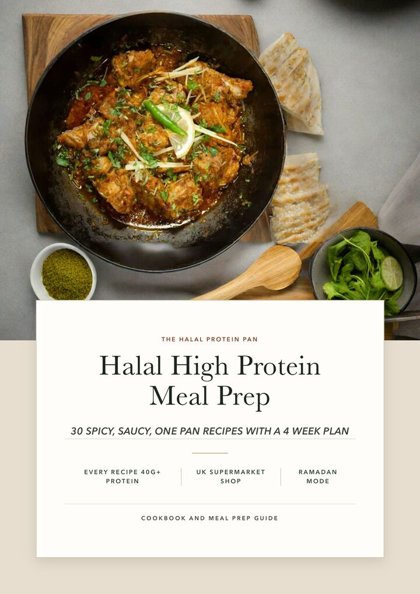
High protein halal recipes to start with
Three are free in full right here. Three more come with the free 5 recipe sampler. The rest are in the full pack, with their macros shown so you can see what you are getting.
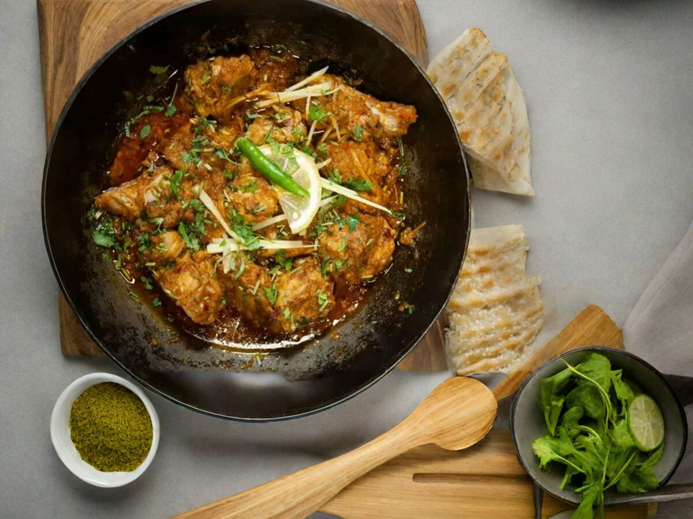
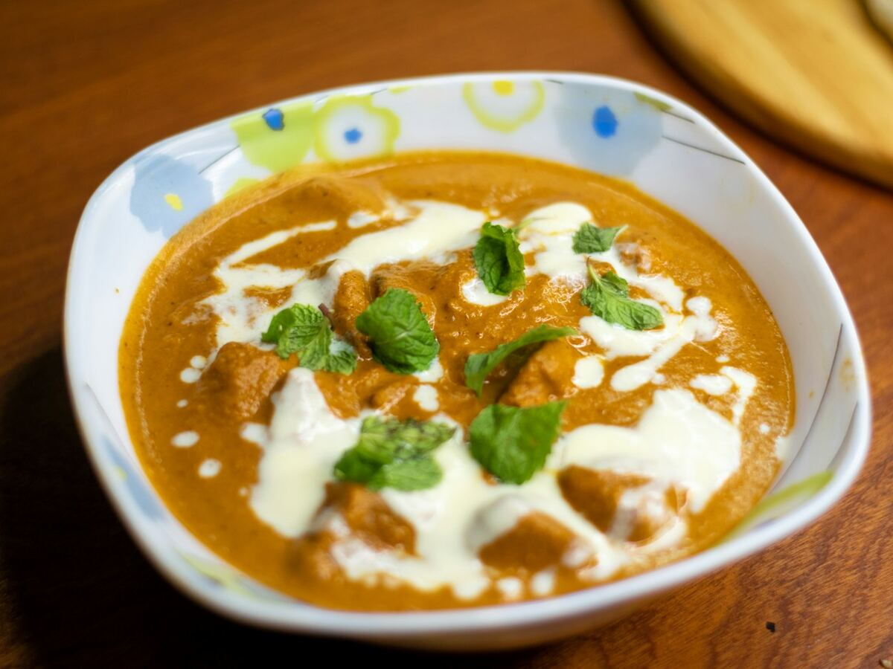
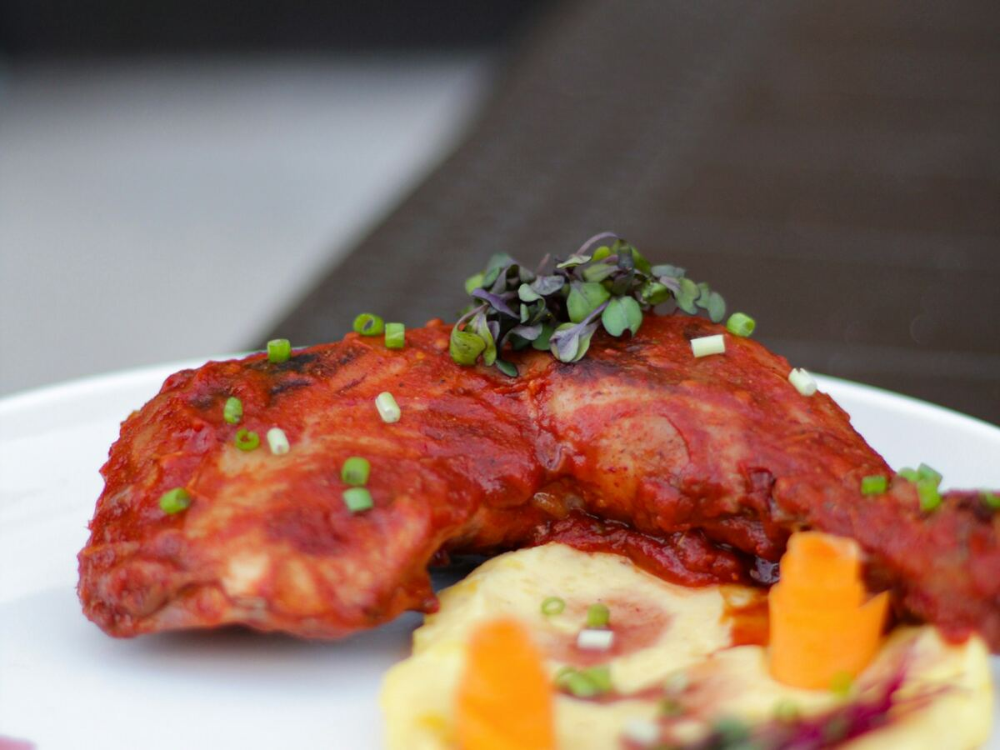
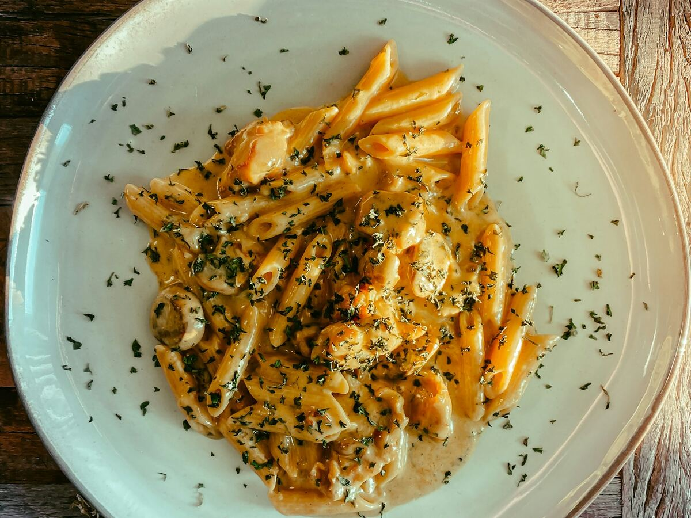
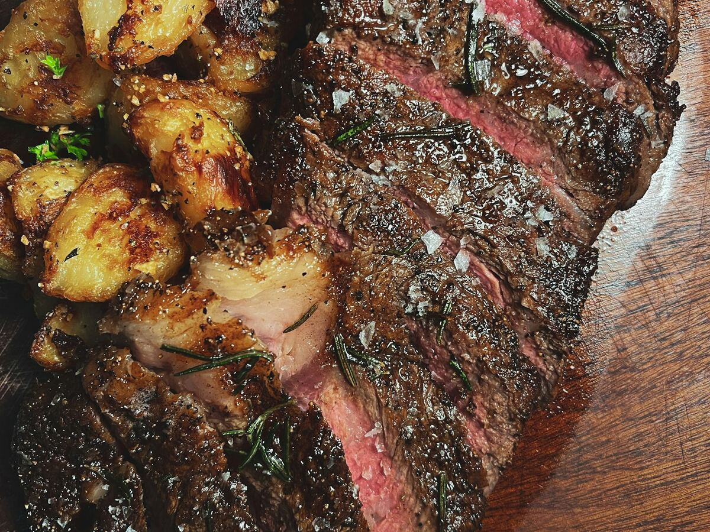
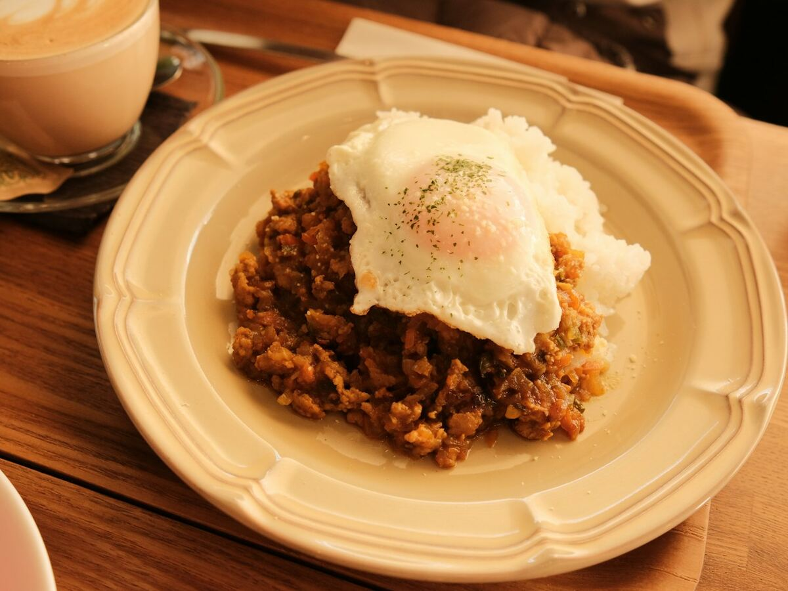
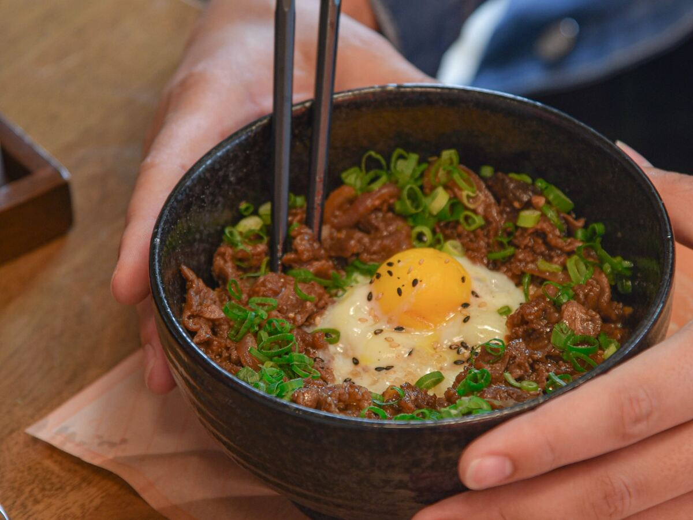
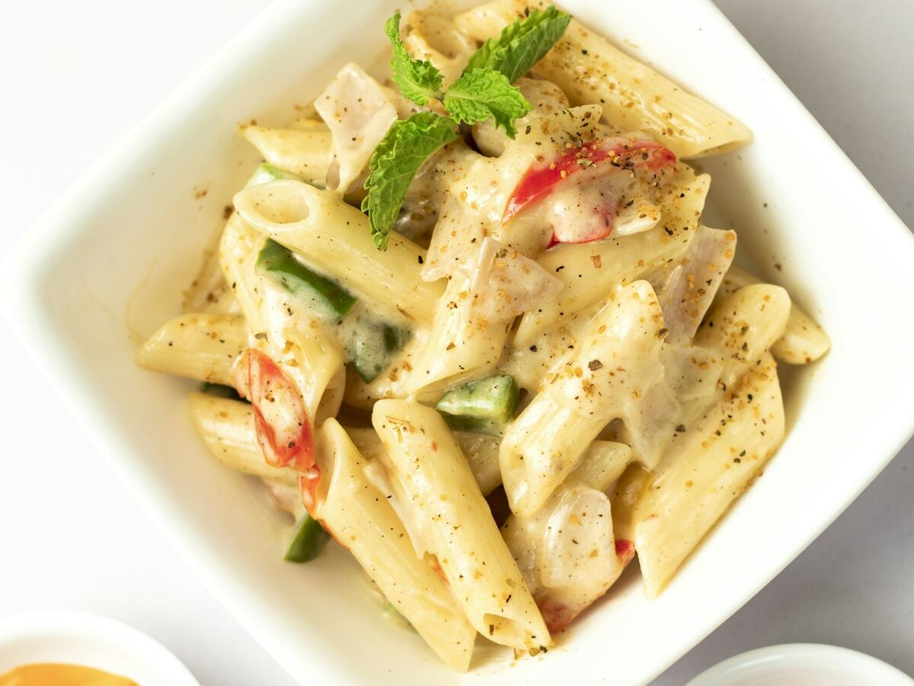
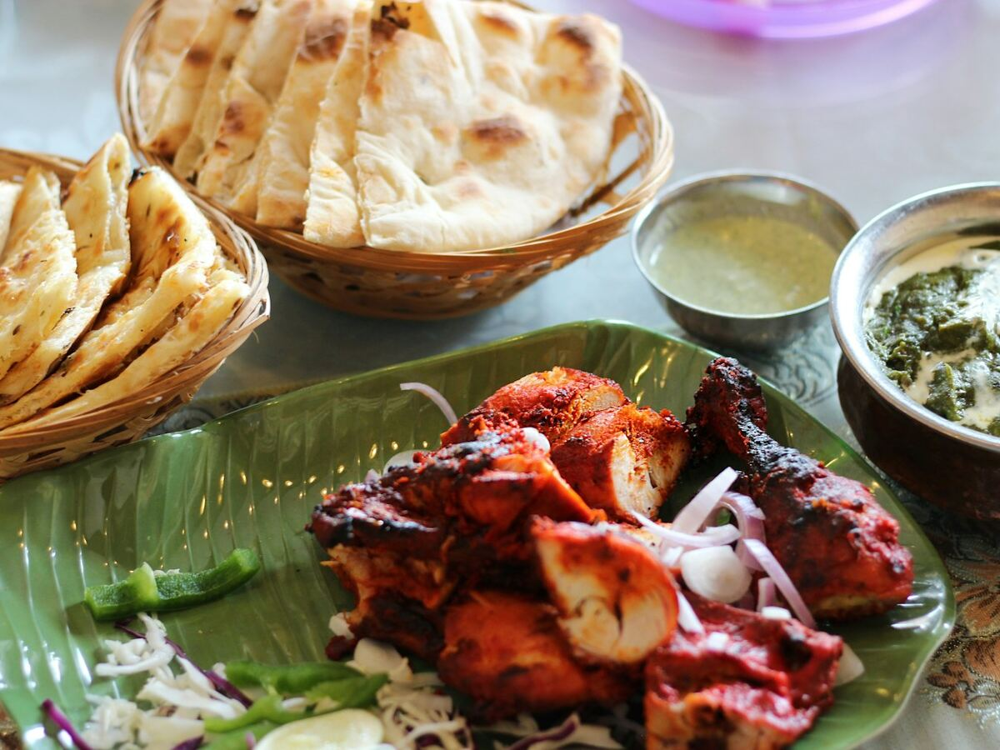
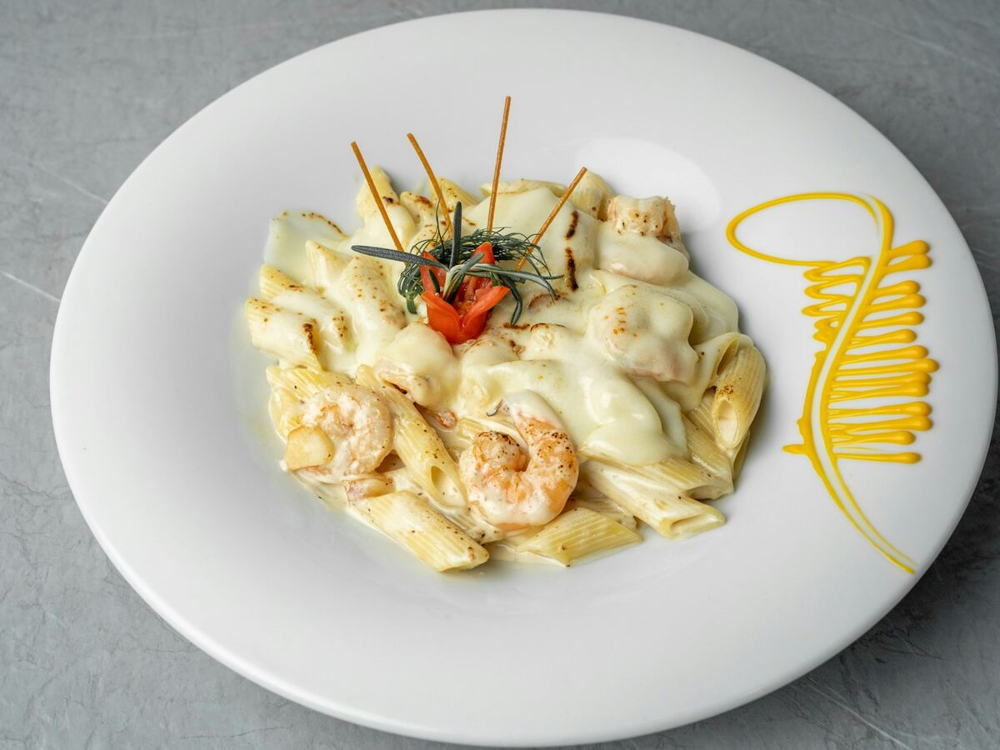
Cook twice a week. Eat well all week.
Sunday cook
Cook two recipes and a breakfast batch. Every recipe makes 4 servings, so that covers lunch and dinner from Monday to Thursday.
Thursday cook
Cook two more. That covers Friday to Sunday, with a spare portion of each for the freezer.
Box, label, reheat
Every recipe has fridge, freezer and reheating notes. Cool rice within 1 hour and reheat food once only, until steaming hot.
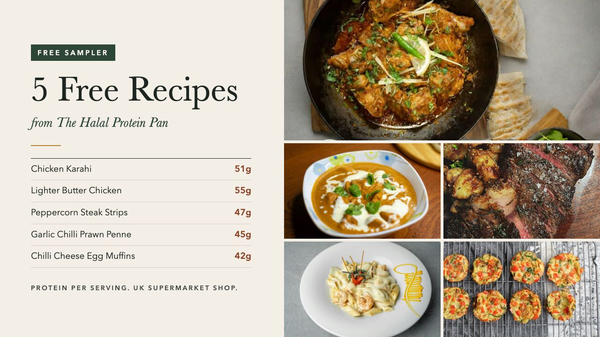
5 free recipes, 40g+ protein each
Chicken Karahi, Lighter Butter Chicken, Peppercorn Steak Strips and Crispy Potatoes, Creamy Garlic Chilli Prawn Penne and Chilli Cheese Egg Muffins. Full method, macros and storage notes, in the same layout as the book.
Get the free samplerHalal shopping in UK supermarkets
Buy from a halal butcher, or look for halal certified packs. Bigger stores and online shops stock halal chicken, mince and diced lamb.
Traditional Parmesan uses animal rennet. These recipes use an Italian style hard cheese made with vegetarian rennet instead.
Many beef and chicken stock cubes contain meat that is not halal. Use halal certified stock, or vegetable stock.
Skip anything cooked with wine, mirin or cooking sake, and check sweet chilli and peri peri sauces for alcohol based flavourings.
Halal High Protein Meal Prep
30 recipes like this one, with a plan that tells you what to cook and when.
- 30 halal recipes with calories, protein, carbs and fat per serving
- A 4 week meal plan with a shopping list for every week
- Ramadan mode: suhoor and iftar from the same recipes
- A UK halal shopping guide: meat, cheese, stock and gelatine
- An Excel macro planner that adds up your day
- A 54 page PDF for your phone, tablet or printer
Use code BISMILLAH at checkout for £3 off. First 50 buyers only.
Get the full pack Try 5 recipes freeHalal high protein meal prep, answered
Are all the recipes halal?
Every recipe is written to be halal. Buy meat from a halal butcher or choose halal certified packs, and use halal certified stock. The pasta recipes use an Italian style hard cheese made with vegetarian rennet instead of traditional Parmesan. None of the recipes use alcohol or gelatine.
How much protein is in each recipe?
Every main recipe has at least 40g of protein per serving. The ten recipes on this site range from 45g to 59g. Calories, protein, carbs and fat are listed for every serving.
How accurate are the macros?
They are worked out from typical UK supermarket label values for the raw ingredients, divided by the number of servings and rounded. Brands vary, so treat them as a guide rather than lab results.
Can I buy everything in a UK supermarket?
Yes. The ingredients are stocked by Tesco, Asda, Sainsbury's, Aldi and Lidl, with spices from the world foods aisle. Halal meat may need a halal butcher or a larger store.
How does the meal prep plan work?
Each week uses four main recipes and one breakfast, and every recipe makes 4 servings. Cook two on Sunday and two on Thursday, about 2 hours each time, and lunch and dinner are covered all week.
What is in the free sampler?
Five full recipes from the book: Chicken Karahi, Lighter Butter Chicken, Peppercorn Steak Strips and Crispy Potatoes, Creamy Garlic Chilli Prawn Penne and Chilli Cheese Egg Muffins, with macros and storage notes.